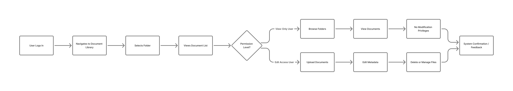

Becton Dickinson — Document Management Platform (UX Redesign Case Study)
Role: UI/UX Designer & Front End
Duration: 19 months
Type: Enterprise B2B – Healthcare / Document Management System
Team: Product Owner, Engineering Team, UI/UX Designers, QA
Tools: Figma, Adobe XD, Jira, Photopea, HTML/CSS
1. Project Overview
Becton Dickinson required a redesign of an internal document management platform used to store and manage critical documents in a structured and permission-based environment.
The platform had an existing version in use. However, the experience needed a modern UX refresh to improve usability, clarity, and consistency while maintaining strict healthcare and enterprise constraints.
The project focused on redesigning 10 core screens that covered the primary document workflows.
2. Problem Statement
The existing document management system was functional but visually outdated and difficult to navigate.
Key challenges included:
- Complex folder structures that were hard to understand at a glance
- Limited visual differentiation between user actions and permissions
- Inconsistent use of colors, icons, typography, and branding
- High cognitive load when managing or locating documents
3. Understanding the Use Case
The platform followed a strict role-based access model to ensure document safety and compliance.
Edit Access Users
- Upload documents
- Edit metadata
- Delete or manage files
View-Only Users
- Browse folders
- View documents
- No modification privileges
Designing for both user types required clear permission visibility and
error prevention to avoid accidental actions.
4. Design Scope
This was a full redesign, not an incremental update.
- Redesign of 10 key application screens
- Complete visual refresh
- Improved information hierarchy
- Clear permission-based interactions
5. Healthcare UX Constraints
Given the healthcare domain, the design followed strict usability and compliance principles:
- Accuracy and clarity prioritized over visual flair
- Minimal, non-decorative UI elements
- Clearly labeled and confirmed actions
- Predictable layouts to reduce user errors
- No ambiguity in critical actions like upload, edit, or delete
6. Accessibility Considerations
The redesigned experience accounted for accessibility best practices:
- Improved color contrast
- Clear typography hierarchy
- Readable font sizes
- Consistent spacing patterns
- Larger click targets for critical actions
- Clear feedback for success, warning, and error states
7. User Flow (Recreated for Portfolio)
The primary user journey was recreated for portfolio demonstration:

This flow was designed to:
- Minimize steps
- Prevent accidental edits
- Clearly reflect user permissions
8. Design Decisions
- Simplified folder visualization for faster scanning
- Clear permission indicators at folder and file level
- Updated color palette aligned with enterprise branding
- Standardized icons for document actions
- Improved typography for readability
- Consistent placement of primary and secondary actions
9. Components Designed
- Folder and file cards
- Permission indicators
- Action toolbars
- Upload and confirmation modals
- Alert and error states
- Table layouts for document lists
These components ensured visual and functional consistency across all 10 screens.
10. Usability Challenges
- Balancing simplicity with dense information
- Designing for multiple permission levels
- Preventing accidental destructive actions
- Maintaining consistency across redesigned screens
- Working within healthcare compliance constraints
11. Results & Impact
- Improved clarity and navigation
- Reduced visual clutter
- Faster document discovery
- Clear differentiation between user roles
- Positive stakeholder feedback on the UI direction
12. My Role
- UX & UI Design
- Redesign of 10+ application screens
- Permission-based interaction design
- Visual system updates (colors, icons, typography)
- Accessibility-focused design decisions
- Stakeholder collaboration and design documentation